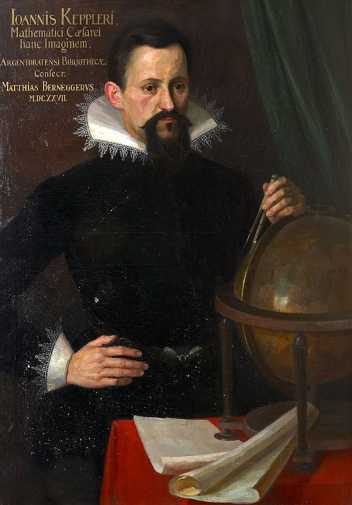
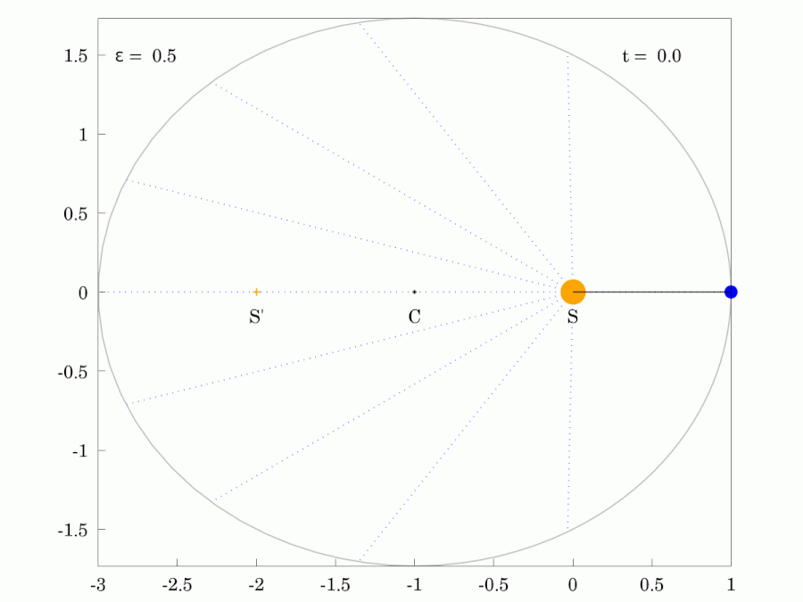
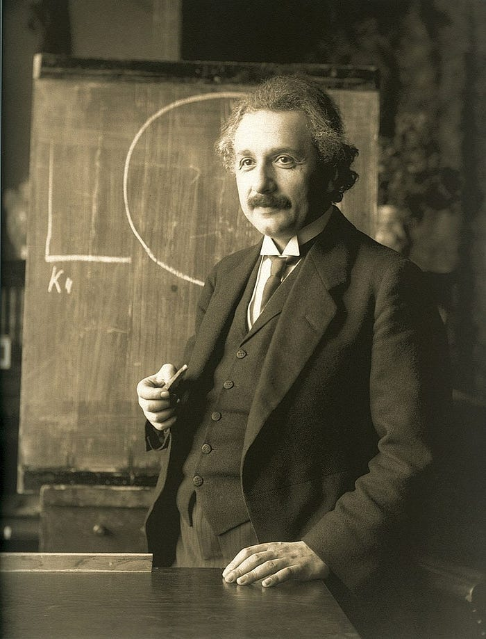

From Planetary Orbits to Relativity: A Tale of Data and Discovery
How Tycho Brahe, Kepler, Newton, and Einstein Changed the World.
October 24, 2024 · Data, Science
The story of Tycho Brahe, Kepler, Newton, and Einstein is a tale of scientific discovery and the power of data. It’s a story that illustrates the importance of collecting and analyzing data in the pursuit of knowledge, and how the careful analysis of data can lead to new insights and understanding. This is a principle that is also at the heart of Machine Learning, which involves the use of algorithms to analyze data and make predictions or decisions.
Tycho Brahe was a Danish astronomer who made extensive observations of the positions of the planets and stars, using the most advanced instruments of his time. His data, which was much more accurate than anything that had been collected before, was essential in the development of Kepler’s laws of planetary motion. These laws describe the orbits of the planets around the sun and were based on Brahe’s observations of the positions of the planets over time.

Before Brahe, astronomers had struggled to accurately measure the positions of the planets due to the limitations of their instruments. Brahe’s observations, which were much more precise than those of his predecessors, allowed Kepler to develop his laws, which described the shapes of the planetary orbits and the relationship between their distance from the sun and their periods.

These laws, which were published in the early 17th century, were a major milestone in the development of classical mechanics and paved the way for the work of Newton.
Newton’s laws of motion, which were published in the late 17th century, were based on a series of experiments and observations that he conducted, including his famous experiments with falling bodies. These laws describe the fundamental principles of motion and form the foundation of classical physics. They are used to explain a wide range of phenomena, from the motion of the planets to the behavior of objects on Earth. Like the laws of planetary motion developed by Kepler, Newton’s laws were based on a careful analysis of data collected through experiments and observations.
Though, according to legend, Newton was sitting under an apple tree when an apple fell and hit him on the head. This incident is said to have inspired him to think about the forces that govern the motion of objects, leading him to formulate the laws of motion and the law of universal gravitation.
The story of the apple has become iconic and is often used to illustrate the concept of gravity, but it is important to note that the story is likely more myth than fact. It is not clear whether the incident with the apple actually happened, and even if it did, it is unlikely that it was the sole inspiration for Newton’s work on gravity.

Einstein’s theory of relativity, which was published in the early 20th century, revolutionized our understanding of space and time. This theory was also based on a careful analysis of data, including the results of a series of experiments and observations. Einstein used these data to develop his theory, which describes the relationship between space, time, and mass and has been confirmed by numerous experiments and observations.
In this way, the story of Tycho Brahe, Kepler, Newton, and Einstein demonstrates the importance of collecting and analyzing data in pursuing scientific knowledge. It shows how the careful analysis of data can lead to new insights and understanding, and how these insights can in turn lead to revolutionary new theories and technologies. This is a principle that is also at the heart of Machine Learning, which involves the use of algorithms to analyze data and make predictions or decisions.
Machine learning algorithms are able to analyze large datasets and identify patterns and trends that may not be immediately apparent to humans. This can be particularly useful in fields like climate science, where Machine Learning algorithms can be used to analyze data on the impacts of climate change and make predictions about the future. For example, machine learning algorithms have been used to predict the impacts of climate change on crop yields, marine ecosystems, and forests, enabling scientists to develop strategies for adapting to these impacts.
The story of Tycho Brahe, Kepler, Newton, and Einstein is a testament to the power of data and the importance of using it wisely. It’s a reminder of the potential for data to drive scientific discovery and to help us understand the world around us. As we continue to grapple with the challenges of the 21st century, it’s more important than ever that we embrace the power of data and use it to make informed decisions and drive progress. Whether it’s through the use of machine learning algorithms or more traditional methods of data analysis, the key is to collect and analyze data in a careful and systematic way, in order to gain insights and drive progress.
Final Thoughts
The importance of data and data analysis in scientific discovery is also evident in fields beyond physics and astronomy. For example, in the field of biology, researchers have used machine learning algorithms to analyze large datasets of genomic data in order to identify the genetic basis of diseases and to develop new therapies. In the field of finance, Machine Learning algorithms have been used to analyze data on stock prices and economic indicators in order to make investment decisions.
In many of these cases, the ability to analyze large datasets and identify patterns and trends that may not be immediately apparent to humans has been key to making significant advances. By automating the analysis of data, machine learning algorithms are able to help researchers and practitioners process and analyze vast amounts of data more efficiently, enabling them to gain insights and make informed decisions faster.
Despite the many benefits of machine learning, it’s important to recognize that these algorithms are only as good as the data they are trained on. In order to get accurate results, it’s crucial to ensure that the data used to train Machine Learning algorithms is accurate, representative, and unbiased. This requires careful data collection and preparation, as well as a thorough understanding of the limitations and biases of the data being used.
Overall, the story of Tycho Brahe, Kepler, Newton, and Einstein demonstrates the importance of collecting and analyzing data in pursuing scientific knowledge.
Whether it’s through the use of machine learning algorithms or more traditional methods of data analysis, the key is to collect and analyze data in a careful and systematic way, in order to gain insights and drive progress.
The End
Marcello Politi
This article was published on Medium